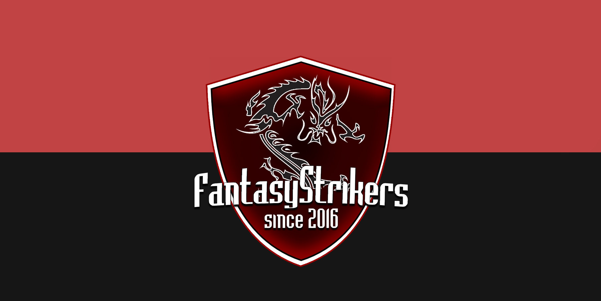

Team
Mitglieder und Rollen

Entstehung
FantasyStrikers wurde von Armin Gross (mermeit) gegründet. Erste Mitglieder traten nach kurzem bei, darunter Felix Welscher, Maximilian Hochkofler und Simon Burger. Kurze Zeit trat später Lorik Thaqi (Sotschi) bei und übernahm somit die Rolle der second AWP spielt aber Hauptsächlich Rifle
Momentane Situation
Momentan ist ein ESL turnier geplant festes Datum steht leider noch nicht fest